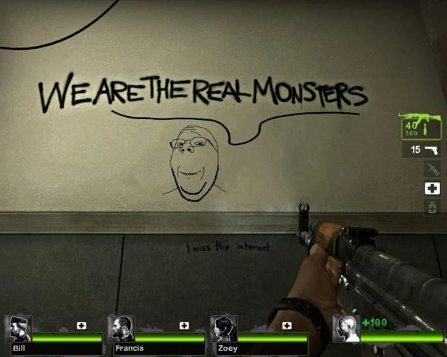

В последнее время (последние пару лет) много смотрим кина и сериалов про маньяков, и я поймал себя на мысли "а чтобы стать знаменитым можно стать маньяком".
Эта мысль хорошо отразили в концовке второго сезона Почему женщины убивают. Главная героиня сезона - простушка, которая хочет пробиться в элитное общество, случайно (из-за разных обстоятельст) убивает несколько человек, и в конце сезона об этом все узнают, ее все о(б)суждают, пишут о ней, а ей это и надо, она видит в этом всем славу, и достижение своей цели:
Не то чтобы я хотел стать знаменитым таким способом, но столько сериалов и кина про них, больше чем про программистов. Ща вот смотрим Black Bird, прикольный кстати. Там заслали челика в тюрячку к маньяку, чтобы тот рассказал, где трупы женщин прячет, и в процессе выясняется, что гг сам не сильно отличается от маньяка своим отношением к женщинам: маньяк их хлором усыплял, сексил и убивал, а гг делал тоже самое только социально-приемлемо: спаивал, предлагал норкотике и просто сексил - we are the real monsters получается)))
Еще там кста маньяк похож на мемного героя игры Диско Элизиум (или на ютубера klio хах):

Потом смотрели Mindhunters, который похож на Black Bird: челы пытаются понять почему маньяки убивают, проводя с ними интервью. Этот серик снял знаменитый Финчер, и у него тоже про маньяков есть пара кинолент Зодиак там, Семь. Ой еще про Майндхантерс: какой же он желтючий
Потом Монстр: История Джеффри Дамера - ну тут по названию все понятно, жена кста попросила дропнуть после второй серии, жутьб нагнали нормас. Ощущение что сидишь с маньяком рядом, и он ща тебе норкотиков насыпит в бухло и убьет, брр
Че еще? А, в России тоже про маньяков появилось: серик Зверобой, филм Казнь (вот это вобще чернуха кста, мрачняк и грязб). Да в России Собчак берет интервью у маньяка (хотя пока он в перебивке с мужиком общался его живости больше было, и могло бы получится по-настоящему thrilling интервью, а не пластмаска)
Крч народу нравится снимать, нравится смотреть про убивц, ну наверн потому что темка-то такая, щепетильная, запретная, ну и триллинг да, а это всегда привлекало. Вон про вторую работу тоже всем оказалось интересно, потому что запретное (для большинства эйчаров это красный флаг, после которого собес прекращается). Ну, не туда завернул. Запретный плод сладок крч
О, очевидно что мысля не нова, и вон Файб про то же рассказывает: